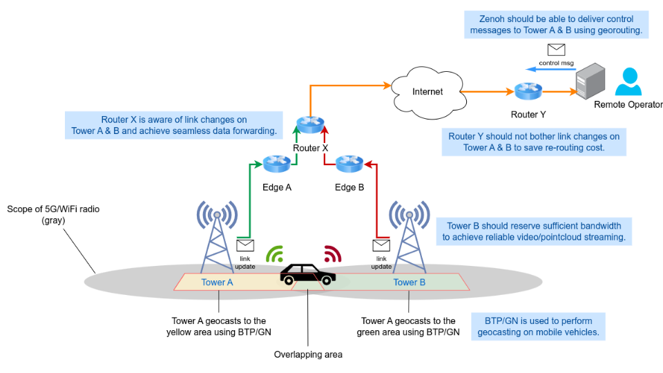
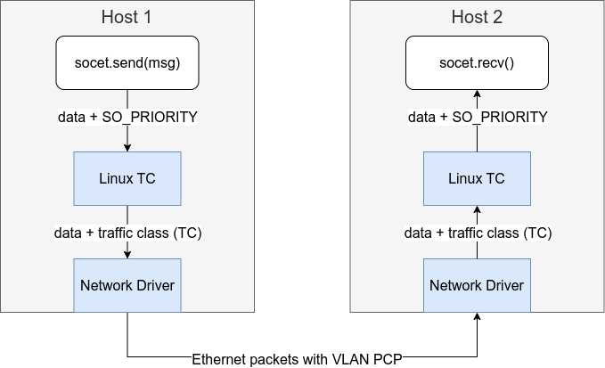
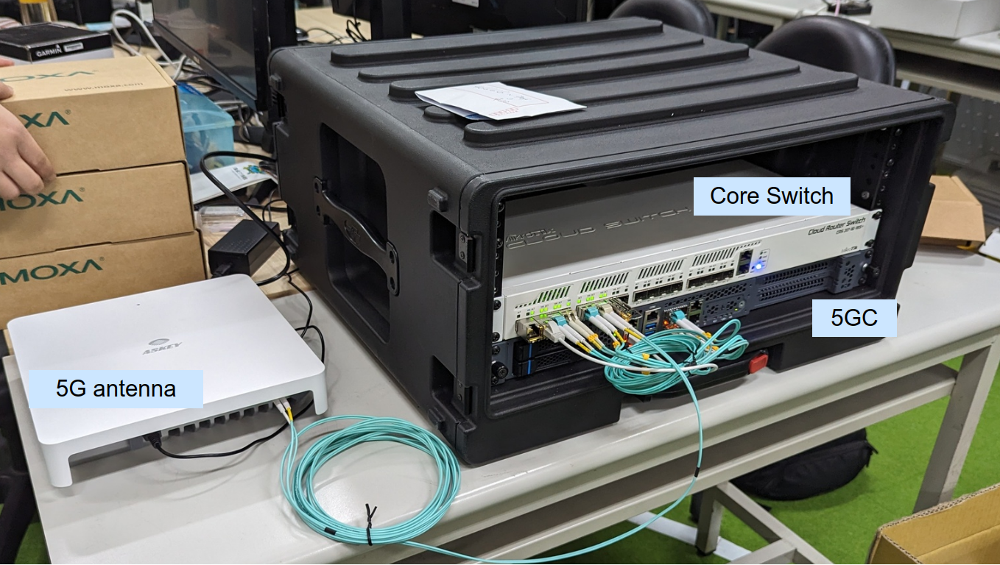

The Goal of The Project
This project focuses on the study of the construction of the vechile network based on named data networking semantics using emerging technologies. It idea is to locate data pieces using rich path expressions instead of addresses to support multi-vehicle monitoring and remote control. The targeted scenario is illustrated as follows.

The Technologies to Be Used
Time-sensitive Network and Linux QDISCs
Time-sensitive Network is a set of standards from IEEE 802.1 working group. It compiles basic constructs to build a network that with advanced congestion control and latency guarantees. The components include gating, priority selection policies and shapers. The impplementation is mostly done by Linux QDISCs in this project. QDISC is a part of Linux traffic control (TC) that allows users to define queing policies, filters and gating control on network devices.
Zenoh
Zenoh acts as a middleware that allow devices to communicate through publication/subscription manner, in which data is named by a path expression. It detangles the data content and the actual address of network peers. In this way, the data sources are discovered through a discovery mechanism and the connections are established afterwards. The application using Zenoh simply provide the names of data that is desired or is provided by the peer.
ETSI C-ITS nad Vanetza
ETSI C-ITS is a set of standards to describe the construction of intelligent transport system (ITS) in Europe. It defines the concepts, protocols and message formats used in the ITS system. In this project, the GeoNetworking protocol and Basic Transport Protocol (BTP) are used to achieve geographical data transport.
Challenges
The Integration of High-Level Zenoh Network and C-ITS Protocols
The integration work is necessary for userspace programs to access remote vehicle and cloud services through the standard C-ITS vehicle network. The challenge is to bridge the seemly differenct concept among the higher and lower layers. For example, the single-hop geocasting is defined in C-ITS GeoNetworking, but the Zenoh does not has the capability yet.
Data Transmission Reliability under Vehicle Mobility Assuptions
The current network architecture totally replies on 5G/LTE to process the mobility status of vehicles, which is not address by the Zenoh middleware. The applications above could experience temporary data outage due to the transfer of base stations and route changes. On the other hand, the current Zenoh routing algorithm does not process the case of high-fequent route change.
Zenoh Internals
This chapter gives a brief overview of internal components in Zenoh. The basic components is shown in the figure below.

Zenoh I/O - Transports and Links
A transport tracks a high-level relation to a Zenoh peer on the network, which maintains one or more links toward that peer. A link is a basic unit of network connection, such as a TCP, a UDP or an UNIX domain socket.
As you can see in the figure, a tranport has a RX head and a TX head, respectively serve for data ingress and egress work loads. Both heads contain 8 sequence number counters for 8 levels of priorities.
A transport also stores a list of related links. Each link has a
pipeline of 8 queues attached beforehand (named TrasnmissionPipeline
in source code), each serving for a respective priority. In this
pipeline, the messages to be sent are arranged into batches, and the
batches are later sent to the socket wrapped in the link struct.
Routing
Zenoh provides several routing strategies named Hat Code. Each Hat Code provides functions to update the route table and to compute the routes.
- Client
- Router
- P2P Peer & Link-State Peer
In the network, each peer can be one of router, peer and client roles. The router peers uses the Router Hat Code, while client peers uses the Client Hat Code. The Router peers performs link-state routing among the other router peers. The client peers do not perform any routing computation, but simply forward messages to a preassigned router peer.
When a peer acts in a peer role, it has two Hat Code to use, the P2P and Link-State. In P2P mode, the peers assume that every peer in the network is directly reachable. In Link-State mode, each peer performs link-state routing algorithm and each peer maintains a netowrk graph internally.
Qos Parameters
For the purpose of mapping all kinds of traffic flows in remote driving, we also summarize the QoS parameters in Zenoh in the following table.
Congestion control
| Congestion control | Definition |
|---|---|
| Z_CONGESTION_CONTROL_BLOCK | Messages are not dropped in case of congestion. |
| Z_CONGESTION_CONTROL_DROP | Messages are dropped in case of congestion. |
Priority
| Priority | No. | Definition |
|---|---|---|
| Z_PRIORITY_REAL_TIME | 1 | Priority for RealTime messages. |
| Z_PRIORITY_INTERACTIVE_HIGH | 2 | Highest priority for Interactive messages. |
| Z_PRIORITY_INTERACTIVE_LOW | 3 | Lowest priority for Interactive mesages. |
| Z_PRIORITY_DATA_HIGH | 4 | Highest priority for Data messages. |
| Z_PRIORITY_DATA | 5 | Default priority for Data messages. |
| Z_PRIORITY_DATA_LOW | 6 | Lowest priority for Data messages. |
| Z_PRIORITY_BACKGROUND | 7 | Priority for Background traffic messages. |
Express
| Is_expres | Definition |
|---|---|
| true | Zenoh will not wait to batch this message with others to reduce the bandwith. ( lower latency ) |
| false | Zenoh will not wait to batch this message with others to reduce the bandwith. |
Time-Sensitive Network (TSN) on Linux
The work was done under the cooperation of NEWSLAB, National Taiwan University and ADLINK Corp. Most of the content are copied from the TSN tutorial on ADLINK.
The time-sensitive network (TSN) is a collection of standards built atop of standard Ethernet that describes a reliable and low-latency network architecture based on layer 2 IEEE 802.1Q VLAN. It approaches the latency control in many aspects, including time synchronization, priority selection, traffic shaping and capacity reservation. Each of them contributes to a portion of the overall network.
This chapter introduces a practical TSN setup using commodity hardware done in a combination of VLAN, Linux TC and userspace tools. This setup allows the network packets to carry extra priority information from one host to another. The Linux kernel can then applies traffic control using the priority information on packets. The mapping among application-level QoS and traffic control policies are studied to enable further userspace integration. In the following article, the following topics will be covered.
-
Priority translation
Introduce the priority settings in each network layer and mapping among them.
-
Gating and queuing control using Linux TAPRIO
It focues on tc-taprio(8) buitin the Linux kernel using the priority information.
-
Application QoS and traffic control policies
Describe the application QoS in ROS and Zenoh and their connection to Linux TC policies.
Using TSN-enabled Network Cards
The network card must meet certain requirements to support traffic control on Linux. The details are described in the section.
Priority Translation
The priority is used to mark the urgentness of the data packets, which presents in each layer of protocols for slightly different purposes. The The details are described in the section.
Gating and Queing using Linux TAPRIO
Architecture
flowchart TB
subgraph peer2 ["Bob"]
direction TB
peer2-vlan2["vlan2
192.168.2.2"]
peer2-eth0["eth0
10.8.0.2"]
peer2-vlan2 --- peer2-eth0
end
subgraph peer1 ["Alice"]
direction TB
peer1-vlan2["vlan2
192.168.2.1"]
peer1-eno1["eno1
10.8.0.1"]
peer1-vlan2 --- peer1-eno1
end
phy("Local Network
10.8.0.0/24")
phy --- peer2-eth0
phy --- peer1-eno1
Benchmark
The effectiveness of
Using TSN-enabled Network Hardware
The hardware card must be carefully selected to enable full hardware offloading on Linux. The Intel I210 (spec) is recommended in our settings.
Verifying the Network Card
The network device must have at least 2 or more builtin hardware queues builtin. To verify it,
ethtool -l eth0
It shows that Intel I210 has at least 4 channels.
Channel parameters for eth0
Pre-set maximums:
RX: 0
TX: 0
Other: 1
Combined: 4
Current hardware settings:
RX: 0
TX: 0
Other: 1
Combined: 4
The second is the check whether the card suppots full hardware
offloading. To verify it, create a TAPRIO policy on the device with
flag 0x1. It should run without erros.
sudo tc qdisc replace dev eth0 parent root handle 100 taprio \
num_tc 3 \
map 2 2 1 0 2 2 2 2 2 2 2 2 2 2 2 2 \
queues 1@0 1@0 1@0 \
base-time 1528743495910289987 \
sched-entry S 01 300000 \
sched-entry S 02 300000 \
sched-entry S 04 400000 \
flags 0x1 \
txtime-delay 200000 \
clockid CLOCK_TAI
Troubleshooting
Cannot detect interface
- The port used for the experiment cannot be detected. It is likely a hardware issue.
- After we removed the network card and switched it to another slot, then reconfigured the IP and VLAN settings.
Unable to ping the other VLAN. Shortly after booting up, unable to ping even the physical interfaces. Checked the routes:
192.168.1.0/24 dev vlan1 proto kernel scope link src 192.168.1.2 metric 400 linkdown
192.168.7.0/24 dev enP4p4s0 proto kernel scope link src 192.168.7.2 metric 102 linkdown
Display as "linkdown," manually bringing them up (using ip link set up) had no effect. Physical interface status displayed as:
<NO-CARRIER,BROADCAST,MULTICAST,UP>
Attempts such as reconfiguring IP settings and restarting via nmtui were unsuccessful. The issue was ultimately resolved by changing the network card to a different slot.
Priority Translation
The priority is used to mark the urgentness of the data packets, which presents in each layer of protocols for slightly different purposes.

-
Zenoh priority in userspace
It is an internal priotiy defined in the Zenoh network.
-
Linux socket priority
The priority is used within the Linux system, which are respected by Linux traffic control (TC) policies priority.
-
Traffic class
The traffic class on marked on packets on TX hardware queue. The Linux kernel maps the socket priorities to traffic classes before putting them to hardware queues.
-
VLAN Priority Code Point (PCP)
The priority number is labeled in the VLAN header, which enables layer 2 queing and traffic control defined in IEEE 802.1Q standard.
Priority Mapping Practices
Setting Socket Priority in Programs
In this TSN network, the application is responsible for providing
desired priority on data packets. The standard method is to configure
the SO_PRIORITY option on sockets using the setsockopt system
call. Here are C and Rust examples.
In the C programming language, the socket is represented by a file
descriptor. The file descriptor and the priority number are provided
to setsockopt().
#include <sys/socket.h>
// Open a socket
int fd = socket(AF_INET, SOCK_STREAM, 0);
// Set the SO_PRIORITY to 6
int priority = 6;
int ret = setsockopt(fd, SOL_SOCKET, SO_PRIORITY, &priority, sizeof(priority));
if (ret < 0) { /* error */ }
In the Rust programming language, a TCP connection is created by a
TcpStream and the underlying file descriptor is obtained from the
stream. We call the setsockopt() from the
nix library to configure the socket
priority.
#![allow(unused)] fn main() { use nix::sys::socket::{sockopt::Priority, getsockopt, setsockopt}; use std::net::TcpStream; use std::os::unix::io::AsRawFd; // Create a TCP socket let mut stream = TcpStream::connect("11.22.33.44")?; // The the underlying file descriptor of the socket. let fd = stream.as_raw_fd(); // Set SO_PRIORITY to 6. setsockopt(fd, Priority, 6)?; }
Mapping Socket Priority to Traffic Classes
The traffic classes are respected by hardware queues within network
cards. This is an example TAPRIO qdisc policy configured on physical
network device eth0 the device.
sudo tc qdisc replace dev eth0 parent root handle 100 taprio \
num_tc 3 \
map 2 2 1 0 2 2 2 2 2 2 2 2 2 2 2 2 \
queues 1@0 1@0 1@0 \
base-time 1528743495910289987 \
sched-entry S 01 300000 \
sched-entry S 02 300000 \
sched-entry S 04 400000 \
flags 0x1 \
txtime-delay 200000 \
clockid CLOCK_TAI
Here is the break down of the command.
-
num_tc: number of traffic class -
map: The relationship between Linux priority and traffic class. -
queue: The queues in "count@offset" notation specifies the queue range for each traffic class. According to the official documents, the ranges should not overlap and must be a contiguous range of queues. -
flagsconfigures the mode of operation. It can be 0x1 or 0x2. Enabling the execution of the Task Admission Control (TAS) functionality either in software or hardware.
Mapping Socket Priority to VLAN PCP
This command line creates a virtual VLAN device named vlan1 with
socket priority to VLAN PCP mappings for egress packets. This exmaple
simply maps socket priority 0 to PCP 1, socket priority 1 to PCP 1 and
so on.
sudo ip link set dev vlan1 type vlan egress 0:0 1:1 2:2 3:3 4:4 5:5 6:6 7:7
Benchmark
Tested Scenario
The benchmark assumes a remote driving scenario, in which an operator controls a remote vehicle. The vehicle uploads a live camera and point cloud stream, while the operator sends control commands to the vehicle.


Message Payload Characteristics
- Control Messages
- Message Size: Typically small (e.g., a few bytes to tens of bytes), as it often includes control commands or instructions.
- Message Rate: High frequency, usually sent multiple times per second (e.g., 10-100 msg/s) to ensure real-time control.
- Latency Sensitivity: Extremely low latency required, as delayed control messages could result in unsafe operations.
- Reliability Requirement: High reliability to avoid control errors.
- Camera Feed
- Message Size: Large, as each message might contain image or video data. Size can range from kilobytes (KB) to megabytes (MB), depending on resolution and compression.
- Message Rate: Moderate to high frequency, depending on the frame rate (e.g., 15-60 frames per second, each frame being one message).
- Latency Sensitivity: Moderate latency tolerance, though real-time feedback is still important.
- Reliability Requirement: Moderate to high reliability, as missing frames may degrade video quality but not disrupt overall system functionality.
- Point Cloud Data
- Message Size: Very large, as point cloud data contains 3D spatial coordinates. Size can range from hundreds of kilobytes (KB) to several megabytes (MB) per message.
- Message Rate: Lower frequency, typically a few messages per second (e.g., 1-10 msg/s) depending on the system’s sensor capture rate.
- Latency Sensitivity: Moderate, as point cloud data is often used for mapping or object detection.
- Reliability Requirement: High reliability needed for accurate environmental mapping and object recognition.
- Vehicle Status Updates
- Message Size: Small (e.g., a few bytes), as it typically includes parameters such as speed, acceleration, and fuel levels.
- Message Rate: High frequency, sent multiple times per second (e.g., 10-50 msg/s) for real-time monitoring of the vehicle's condition.
- Latency Sensitivity: Low latency required to ensure that the system has up-to-date information about the vehicle’s status.
- Reliability Requirement: High reliability to avoid inaccurate status reporting.
Message Payload Requirements
| Type | Min Bits/s rate | Production Interval (ms) | Payload Size (Bytes) | Delay Constraint (Di) | Reliability Constraint (Ri) |
|---|---|---|---|---|---|
| Control | 1K | 100 | 128 | 50 | 99.99% |
| Camera | 4M | 33.33 | 1K | 100 | 99% |
| Point Cloud | 16M | 100 | 1K | 200 | 99.9% |
| Camera | 5K | 100 | 128 | 100 | 99% |
The Effectiveness of TAPRIO
| With TAPRIO? | |
|---|---|
| Yes |  |
| No |  |
The Effectiveness of Signal Strength
Under General Signal Condition
| Message Class | Without TAPRIO | With TAPRIO |
|---|---|---|
| Control |  |  |
| Camera |  | |
| Point Cloud |  | |
| Status |  | |
Under Good Signal Condition
| Message Class | Without TAPRIO | With TAPRIO |
|---|---|---|
| Control |  |  |
| Camera |  | |
| Point Cloud |  | |
| Status |  | |
ETSI C-ITS on Zenoh
The work aims to enable the vehicle-to-vehicle communication capability on Zenoh, in which the European C-ITS standard is preferred. It resues the protocols and data format already implemented in the Vanetza project (doc). There are two major works planned in the project.
- Integrate the BTP/GN network stack from Vanetza as the replacement of TCP/IP on Zenoh. It enables high-level applications to process vehicle-to-anything messages in a native way, and enables geographical data multicast and peer discovery.
- The Zenoh routing algorithm should be modified to recognize the movement of vehicles according to geographical information.
Architecture
The overall architecture is shown in the figure below. The BTP/GN stack will be added to Zenoh apart from existing TCP/IP stack. A dedicated Zenoh-to-C-ITS brige will be implemented to process messages defined in ETSI C-ITS.

BTP Integration in Rust and Zenoh
This is a working-in-progress task to add BTP/GN link to Zenoh. The initial step is to implement the Rust interface for Vanetza's C++ BTP socket. The code implementqation can be found in the vanetza-btp-service repository.